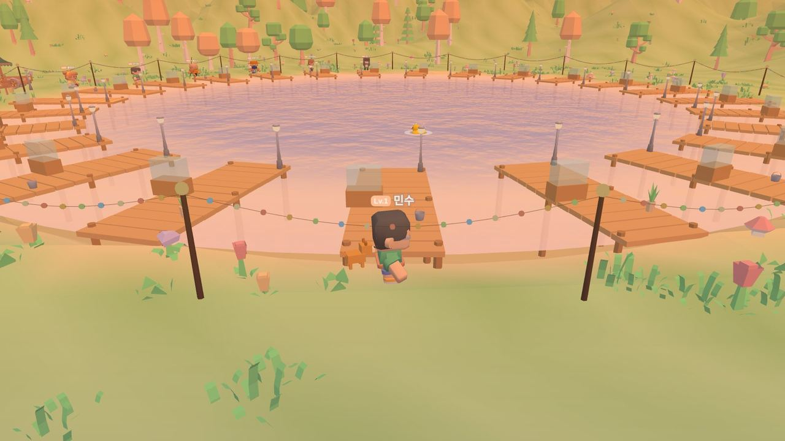
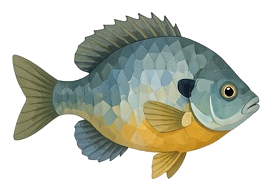
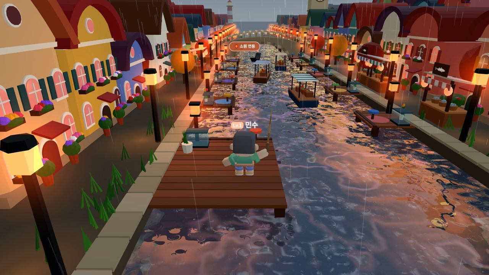
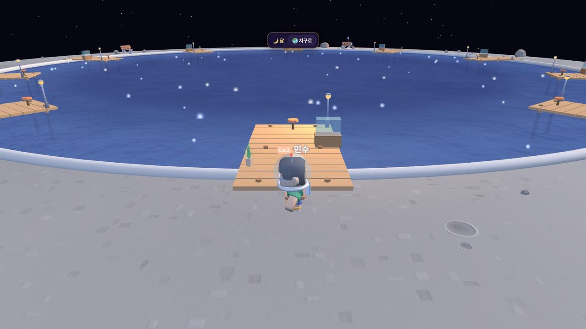

호숫가Lv.1 ~ 30
데크와 어항, 오리가 떠다니는 첫 호수
설치 없이 브라우저에서 바로
잠시 쉬어가는
잠시 쉬어가는
작은 낚시 공간
호숫가 데크에 앉아 낚싯대를 드리우고, 잡은 물고기는 어항에 모으고, 운하와 달까지 천천히 넓혀 가요. 처음 오신 분을 위한 안내와 공략, 함께 나누는 게시판이 있어요.

지금 낚시 중인 사람들 그대로

블루길 ★2 낚았어요!처음이라면 이 순서로
게임 속 할아버지 낚시 수업과 같은 순서예요레벨 따라 넓어지는 낚시터

운하Lv.30 ~ 50
불빛 켜진 골목 운하, 소원 연등준비 중
하늘섬Lv.50 ~ 70
구름 위 섬, 곧 열려요
달Lv.70 ~ 99
우주 헬멧 쓰고 별자리 물고기